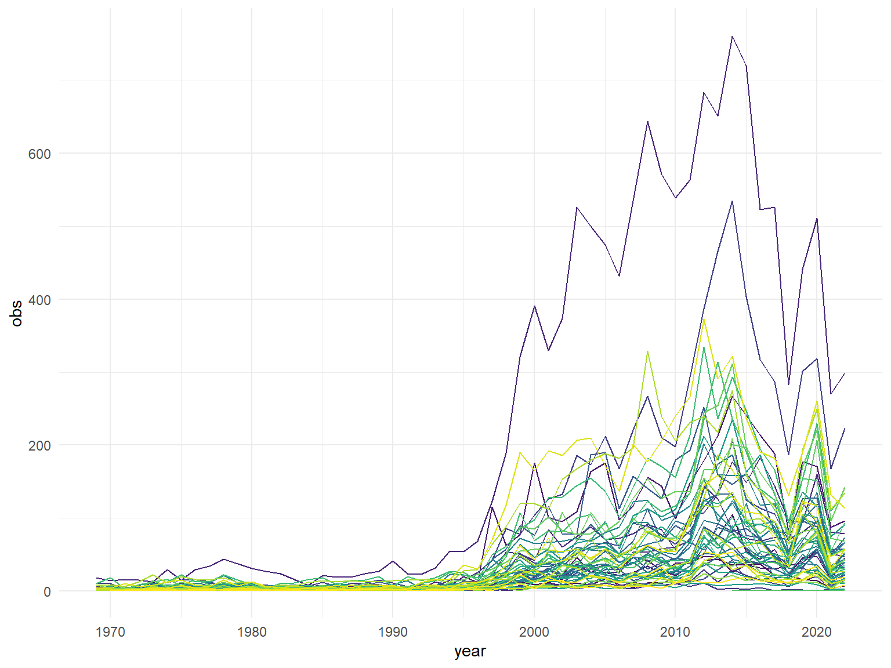
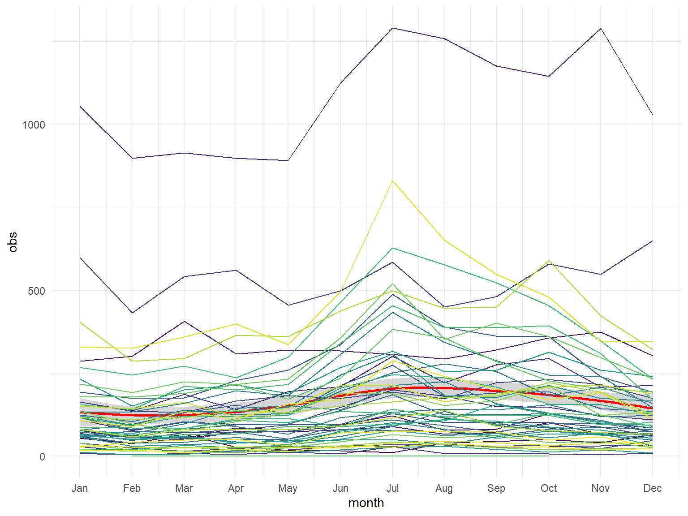
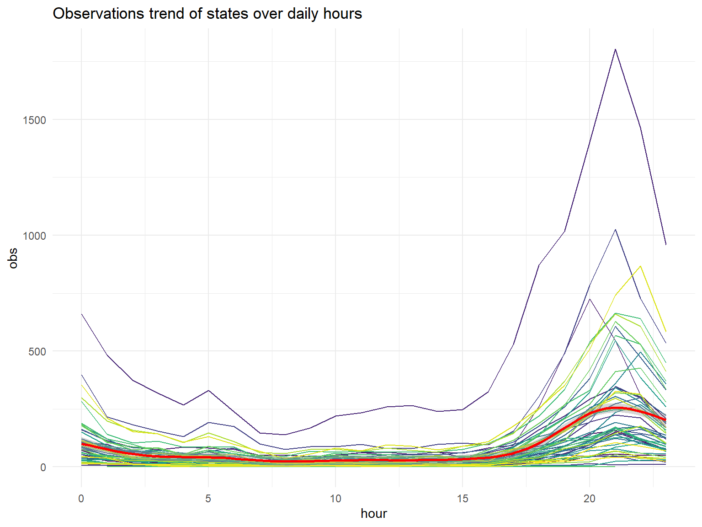
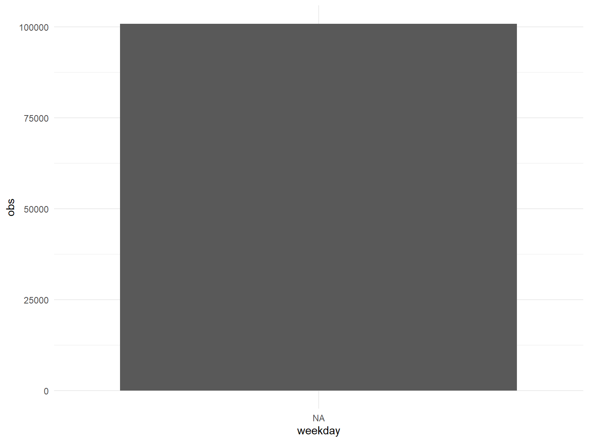

## generate date information separately for latter trend analysis
ufo_trend <- read_csv("data/ufo_clean.csv")|>
#slice(1:50000)|>
mutate(
year = year(date_time),
month = month(date_time),
hour = hour(date_time),
weekday = factor(weekdays(date_time),
levels = c("Sunday",
"Monday",
"Tuesday" ,
"Wednesday",
"Thursday",
"Friday",
"Saturday"))
)## Rows: 100820 Columns: 12
## ── Column specification ────────────────────────────────────────────────────────
## Delimiter: ","
## chr (6): city, state, shape, duration, text, location
## dbl (3): city_latitude, city_longitude, dist
## lgl (1): duration_clean
## dttm (2): date_time, posted
##
## ℹ Use `spec()` to retrieve the full column specification for this data.
## ℹ Specify the column types or set `show_col_types = FALSE` to quiet this message.ufo_trend_plot <- function(variable,data){
trend <- data |>
group_by(state,variable)|>
summarise(
obs = n()
)|>
ungroup()
trend |>
ggplot(aes(x = variable, y = obs))+
geom_smooth(color = "red")+
geom_line(aes(color = state))+
theme(legend.position = "none")+
scale_x_continuous(breaks = 1:12, labels = month.abb)
}ufo_year_trend <- ufo_trend |>
group_by(state,year)|>
summarise(
obs = n()
)|>
ungroup()## `summarise()` has grouped output by 'state'. You can override using the
## `.groups` argument.ufo_year_trend |> arrange(desc(obs)) |> pull(state) |> unique()## [1] "CA" "FL" "WA" "NY" "TX" "OH" "PA" "AZ" "IL" "NC" "SC" "GA" "OR" "MI" "MA"
## [16] "VA" "CO" "WI" "MO" "CT" "TN" "IN" "NJ" "MN" "MD" "AL" "NM" "ID" "NV" "LA"
## [31] "IA" "KY" "ME" "UT" "OK" "NH" "MT" "KS" "AR" "WV" "VT" "RI" "AK" "HI" "MS"
## [46] "NE" "DE" "SD" "WY" "ND" "DC" "AB" "BC" "MB" "NB" "NS" "ON" "SK"ufo_year_trend |> group_by(state) |> summarise(obs_sum = sum(obs))|> arrange(desc(obs_sum)) |> head(10) |> pull(obs_sum) |> range()## [1] 2900 12961ufo_year_trend |>
ggplot(aes(x = year, y = obs, color = state))+
geom_line()+
theme(legend.position = "none")
ufo_month_trend <- ufo_trend |>
group_by(state,month)|>
summarise(
obs = n()
)|>
ungroup()## `summarise()` has grouped output by 'state'. You can override using the
## `.groups` argument.ufo_month_trend |>
ggplot(aes(x = month, y = obs))+
geom_smooth(color = "red")+
geom_line(aes(color = state))+
theme(legend.position = "none")+
scale_x_continuous(breaks = 1:12, labels = month.abb)## `geom_smooth()` using method = 'loess' and formula = 'y ~ x'
ufo_hour_trend <- ufo_trend |>
group_by(state,hour)|>
summarise(
obs = n()
)|>
ungroup()## `summarise()` has grouped output by 'state'. You can override using the
## `.groups` argument.ufo_hour_trend |>
ggplot(aes(x = hour, y = obs))+
geom_line(aes(color = state))+
geom_smooth(color = "red")+
theme(legend.position = "none")+
labs(
title = "Observations trend of states over daily hours"
)## `geom_smooth()` using method = 'gam' and formula = 'y ~ s(x, bs = "cs")'
ufo_weekday_trend <- ufo_trend |>
group_by(state, weekday)|>
summarise(
obs = n()
)|>
ungroup()## `summarise()` has grouped output by 'state'. You can override using the
## `.groups` argument.ufo_weekday_trend |>
ggplot(aes(x = weekday, y = obs))+
geom_col()+
geom_smooth(color = "red")+
theme(legend.position = "none")## `geom_smooth()` using method = 'loess' and formula = 'y ~ x'